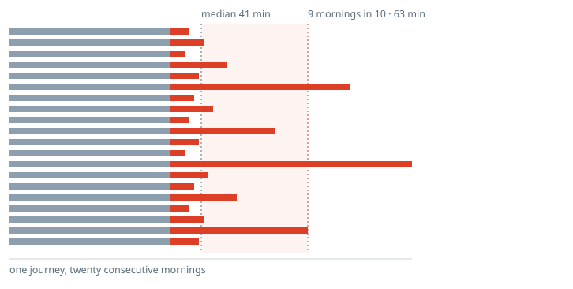

Half of these mornings take 41 minutes or less. One in ten takes 63 minutes or more.
So this commuter leaves 22 minutes early, every single day, to be on time on nine days out of ten. The margin is spent whether the bad morning arrives or not.
Average commute time, the only figure most employers hold, shows none of this.
PraxaTech builds tools that put a number on the distance between where people live and where they work. Once, when they move countries. Daily, when they commute.
An honest comparison of living here versus living there: cost, tax, healthcare, schooling, and what is actually left at the end of the month. Not a cost-of-living index, but the version that accounts for your circumstances.
Then it completes the destination country's visa paperwork from a passport scan, whether the move is for study, work or relocation.
In developmentAn office costs more than its rent. Radius measures the productive hours lost to the commute it creates, weighting unreliability above duration, because a journey that swings by half an hour forces everyone to budget for the worst case every morning.
It turns that into decisions a business can act on: which teams in on which days, whether a satellite site beats a headquarters seat, what staggering start times would actually recover. Aggregated across employers on the same corridor, it becomes something a city can be shown.
Built on the Commute Drag Index, an open specification anyone can compute.
In development